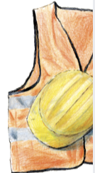

15 mm · under the clamp




earthworm illustration
(to supply)
(to supply)

Your BNG units are registered. Now they need to sell.
Getting your land registered is one thing. Turning units into income is another.
Bring your land into the Biofarm Fold.
We build demand
We drive unit sales
We see it through
Deal after deal
Turn your investment in nature into revenue. Join the Fold.
We’re in the business of nature.
200 mm · inside the roller mechanism